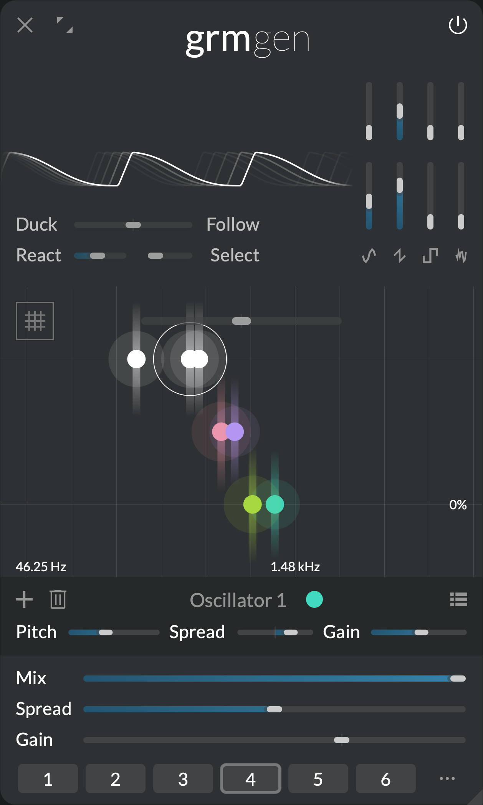

Where signals spring
Gen

All music stems from a simple tone, a simple vibration through time. Shaped, attenuated or multiplied, modulated or processed, it gradually becomes noise, texture, melody, or symphony. Gen is where music starts: a simple yet versatile signal generator bank, with traditional waveforms and input analysis features. A world of generative possibilities.
Features
- Bank of signal generators (up to 16) spreadable in the multichannel space
- Four mixable waveforms per generator, each with a different morphing parameter
- Input envelope follower for gain following or ducking
Context
In the pure tradition of modular synthesizers, and before them the test equipment used creatively by the pioneers of electronic music, Gen is a bank of complex signal generators. As soon as a generator is activated by clicking in the cursor area, it sounds continuously until stopped. No MIDI note or triggering events required, no duration.
Gen can therefore be used to easily generate complex evolving drones, but it can be modulated so as to create triggerable discrete events or generative, random tones. All generators share the same complex waveform, chosen by mixing and warping the signals of four oscillators available in the waveform area:
- Sine with phase modulation
- Triangle with slope control
- Rectangle with pulse width control
- Filtered noise with filter control (from low-pass to band-pass)
Just like all processors, Gen takes sound as input. This input can be passed through unaffected, mixed with the generators (Mix), but can also influence them: each generator embeds an independent envelope follower, able to modulate its own gain depending on the amplitude of the input, opening up adaptive reactions, and basic resynthesis.
Controls
Waveform area
All parameters in the waveform area have as many independently-modulatable instances as there are generators (see Modulation).
- Sine gain: Gain of the sine oscillator.
- Triangle gain: Gain of the triangle oscillator.
- Rectangle gain: Gain of the rectangle oscillator.
- Noise gain: Gain of the filtered noise generator.
- Sine timbre: Amount of sine phase modulation.
- Triangle timbre: Morphs from saw to triangle wave.
- Rectangle timbre: Rectangle pulse width. Morphs from square wave to single-sample impulse.
- Noise timbre: Morphs from low-pass-filtered to resonant band-pass-filtered white noise.
Envelope follower section
- Duck/Follow: At 0%, all generators are constantly on. At positive values (Follow), each generator gain follows more-and-more the amplitude envelope of the input signal. At negative values (Duck), each generator gain is reduced more-and-more when the envelope of the input signal increases.
- React: Envelope follower reactivity, or time it takes for the envelope follower to rise or fall when the input's gain envelope rises or fall. At 0s, it reacts instantly, resulting in ring modulation-type effects.
- Select: Frequency selectivity of the input envelope follower. How much each generator envelope follower listens only to frequencies close to that of this generator. This value is the Q factor of a band-pass filter applied to the input before envelope-following.
Cursor area
Click to add a generator; double-click a generator to remove it. The following parameters are local to each generator:
- Pitch: Pitch of the generator.
- Spread: Channel-locality of the generator (see Spread below). At 0%, the generator outputs only to the channels it is assigned to (see the global Spread section); at 100%, the generator outputs on all channels.
- Gain: Individual gain of the generator.
Additional controls:
-
Ratio: Ratio by which all generator's frequencies are multiplied. Has as many independently-modulatable instances as there are generators (see Modulation).
-
Quantize button: click to quantize all generator pitches to the closest semitone.
Global controls
- Mix: Crossfades between the input signal (0%) and the oscillators signal (100%).
The following parameters have as many independently-modulatable instances as there are generators (see Modulation):
- Spread: Global channel-locality of all generators. This value is added to the local Spread of each generator.
- Gain: Global gain of all generators.
Tips and tricks
Modulating gain
Start with a few sine generators, laid out to make a nice drone chord or cluster. Now set the global Gain to -10dB (centered), and agitate it. Each generator's gain is agitated independently, producing pleasantly animated swashes of sines. From there, focus on the agitation: Cyclic at 100% will repeat a pattern; Slant at -100% and Ease around 50% will produce decaying transients. Increase Jitter to 5% so the rhythmic pattern evolves slowly.
Modulating waveform
We wrote above that all generators share the same waveform, but this is not strictly true! All parameters in the waveform area have independently-modulatable instances for each generator. Adding a few generators and agitating e.g. Sine timbre will modulate the timbre of each generator independently. Be gentle with the modulation range and create living, evolving timbres.
Make a vocoder
Feed a voice into Gen. Add 16 sine generators spread out evenly through the whole frequency range. Put Mix and Spread at 100% to get a loud drone. Put Duck/Follow at 100%; the drone now follows the gain of the input. Now increase Select so each generator follows the gain of the input selectively around its own frequency. Notice how words of the input voice become more-and-more recognizable. It is composed of only 16 sine waves.
You just made a vocoder: it analyses the input signal and resynthesizes it with a small number of sine waves. Now you can play with various input material, various waveforms in Gen, various generator frequencies.
Slow impulses
The Ratio control goes all the way to 0x, allowing sub-audio generator frequencies. While a sine wave won't be hearable at these rates, waveforms with discontinuities will make repeated clicks. Especially nice are 1-sample impulses from the rectangle oscillator, that can then be filtered through Band or Comb. Several of these generators at will produce interesting chaotic rhythms.
Randomize all
Patch randomization is a fun way to explore Gen's tonal palette. Add a few (4) generators anywhere, and agitate e.g. Gain and Ratio (optionally, experiment with modulating these modulators). Lock the global controls (Mix, Gain and Spread) as well as Duck/Follow. Now press the patch-wide Randomize button a few times. You will be surprised.